5. Könnun falla
Athugasemd
Nauðsynleg undirstaða
Vaxandi/minnkandi föll. Sjá einnig undirstöðuatriði um einhalla föll.
Afleiður. Sjá einnig undirstöðuatriði um afleiður.
„The Guide says there is an art to flying“, said Ford, „or rather a knack. The knack lies in learning how to throw yourself at the ground and miss.“
- Douglas Adams, Life, the Universe and Everything
5.1. Inngangur
Aðvörun
Frávik frá bókinni
Það sem á eftir kemur er eitt af fáum atriðum þar sem mín nálgun og skilgreiningar eru frábrugðnar þeim í kennslubókinni eftir Adams.
5.1.1. Hver er munurinn?
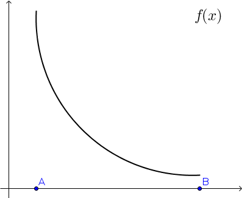 |
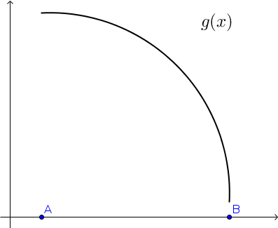 |
{kind=link}
{kind=link}
Skoðum föllin tvö að ofan, þau eru augljóslega ekki eins, þannig að spurningin er hvernig getum við lýst muninum á þeim?
Þau hugtök sem við höfum skoðað hingað til geta ekki greint á milli þessara falla:
Þau hafa sama skilgreiningarmengið \([A,B]\)
Þau taka sömu gildin í endapunktunum
Þau hafa bæði hágildi í \(A\) og lággildi í \(B\)
Þau eru bæði samfelld og diffranleg
Þau eru bæði minnkandi (neikvæð afleiða)
5.1.2. Drögum sniðil
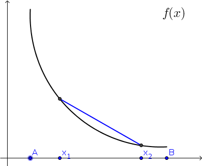 |
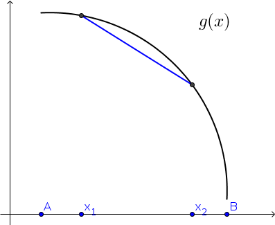 |
{kind=link}
{kind=link}
Ef við veljum nú tvo punkta á \([A,B]\) af handahófi, köllum þá \(x_1\) og \(x_2\), og drögum línu (sniðil) í gegnum punktana á gröfum \(f\) og \(g\) þá sjáum við að sniðillinn lendir fyrir neðan \(g\) en ofan \(f\).
Athugum nú að sérhvern punkt á milli \(x_1\) og \(x_2\) getum við skrifað á forminu \(\alpha x_1 + (1-\alpha)x_2\), þar sem \(\alpha \in [0,1]\). En \(\alpha=0\) gefur \(x_2\) og \(\alpha=1\) gefur \(x_1\).
Þá er \(y\)-hnit punktsins á sniðlinum með þetta \(x\)-hnit gefið með
á fyrri myndinni og
á myndinni fyrir \(g\).
Ef graf \(f\) liggur fyrir neðan sniðilinn þá þýðir það að fallgildi \(f\) í punktunum \(\alpha x_1 + (1-\alpha)x_2\) liggur fyrir neðan punktinum á sniðlinum, það er
Eins, ef graf \(g\) liggur fyrir ofan sniðilinn þá gildir að
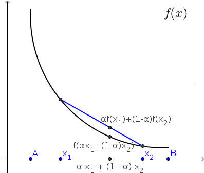 |
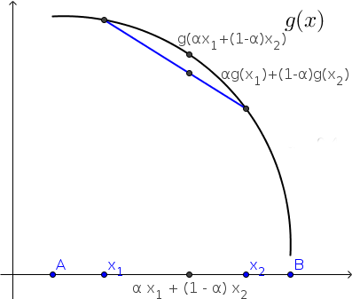 |
{kind=link}
{kind=link}
5.2. Kúpni
5.2.1. Skilgreining: Kúpt/hvelft
Skilgreining
Látum \(f:[a, b]\rightarrow {\mathbb R}\) vera fall.
Segjum að fallið \(f\) sé kúpt en: convex function
Smelltu fyrir ítarlegri þýðingu.\[f(\alpha x_1+(1-\alpha)x_2)\leq \alpha f(x_1)+(1-\alpha)f(x_2).\]Segjum að fallið \(f\) sé hvelft en: concave function
Smelltu fyrir ítarlegri þýðingu.\[f(\alpha x_1+(1-\alpha)x_2)\geq \alpha f(x_1)+(1-\alpha)f(x_2).\]
Athugasemd
Hér erum við komin með hugtak sem getur útskýrt muninn á myndunum í byrjun kaflans, \(f\) er kúpt og \(g\) er hvelft.
5.3. Auðkenning á kúpni með afleiðum
5.3.1. Athugasemd
Athugasemd
Ef við skoðum afleiður fallanna \(f\) og \(g\) betur þá sjáum við að:
Afleiða \(f\) er mjög neikvæð nálægt \(A\) og nálgast svo 0 í \(B\), það er afleiðan er vaxandi.
Afleiða \(g\) er u.þ.b. 0 í \(A\) og minnkar svo þegar við nálgumst \(B\), það er afleiðan er minnkandi.
Með öðrum orðum
5.3.2. Setning
Setning
Fyrir tvídiffranlegt fall \(f\) þá er eftirfarandi jafngilt
\(f\) er kúpt
\(f'\) er vaxandi
\(f'' \geq 0\)
5.3.3. Setning
Setning
Fyrir tvídiffranlegt fall \(g\) þá er eftirfarandi jafngilt
\(g\) er hvelft
\(g'\) er minnkandi
\(g'' \leq 0\)
Aðvörun
Hvort fall er kúpt eða hvelft er algjörlega óháð því hvort það er vaxandi eða minnkandi. Til dæmis er \(f(x) = x^2\) kúpt en það er vaxandi þegar \(x>0\) og minnkandi þegar \(x<0\).
Aðvörun
Föll eru ekki alltaf annað hvort kúpt eða hvelft alls staðar. Alveg eins og það eru til föll sem eru sums staðar vaxandi og sums staðar minnkandi, þá eru mörg föll sums staðar kúpt og sums staðar hveld. Þetta á til dæmis við um hornaföllin.
5.4. Beygjuskilapunktar
5.4.1. Skilgreining
Skilgreining
Punktur \((x_0, f(x_0))\) er sagður vera
beygjuskilapunktur
en: flex point, inflection point, point of inflection
Smelltu fyrir ítarlegri þýðingu.
grafið hefur snertilínu í \(x_0\), og
grafið er kúpt öðru megin við \(x_0\) og hvelft hinum megin við \(x_0\).
5.4.2. Setning
Setning
Ef fallið \(f\) er tvídiffranlegt þá er punkturinn \(x_0\) beygjuskilapunktur fallsins \(f\) ef og aðeins ef \(f''(x_0) =0\) og \(f''\) skiptir um formerki í \(x_0\).
{kind=link}
5.5. Útgildi
5.5.1. Hvar á að leita útgilda
Útgildi skoðuðum við í kafla 3.5, en nú ætlum við að skoða hvernig önnur afleiðan nýtist til að finna og flokka útgildi.
Punktar sem koma til greina fyrir staðbundin útgildi falls \(f\) eru
punktar \(x_0\) þar sem \(f'(x_0)=0\),
punktar \(x_0\) þar sem \(f'(x_0)\) er ekki skilgreint,
þeir endapunktar skilgreiningarmengisins þar sem fallið er skilgreint.
5.5.2. Hágildi/lágildi út frá formerki afleiðu
Látum \(x_0\) vera innri punkt á skilgreiningarsvæði \(f\). Gerum ráð fyrir að \(f\) sé diffranlegt í öllum punktum í einhverju bili utan um \(x_0\) og að \(f'(x_0)=0\).
Ef formerki \(f'\) breytist úr plús í mínus í \(x_0\) (farið frá vinstri til hægri eftir rauntalnaásnum) þá er staðbundið hágildi í \(x_0\).
Ef formerki \(f'\) breytist úr mínus í plús í \(x_0\) þá er staðbundið lággildi í \(x_0\).
Ef formerki \(f'\) breytist ekki í \(x_0\) þá er hvorki há- né lággildi í \(x_0\).
5.5.3. Útgildi og önnur afleiðan
Ef \(f'(x_0)=0\) og \(f''(x_0)<0\) þá er \(x_0\) staðbundið hágildi.
Ef \(f'(x_0)=0\) og \(f''(x_0)>0\) þá er \(x_0\) staðbundið lággildi.
Aðvörun
Athugið að ef \(f''(x_0)=0\) þá getur \(x_0\) verið hvort sem er staðbundið hágildi, staðbundið lággildi eða beygjuskilapunktur.
5.6. Aðfellur
5.6.1. Skilgreining: Lóðrétt aðfella
Skilgreining
Fallið \(f\) hefur lóðrétta aðfellu í punktinum \(a\) ef \(\lim_{x\to a^-} f(x) = \pm \infty\) og/eða \(\lim_{x\to a^+} f(x) = \pm \infty\). Aðfellan er þá línan \(x=a\).
{kind=link}
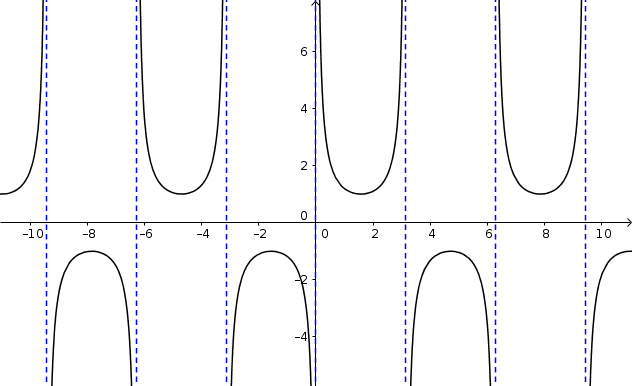
Fallið \(\frac{1}{\sin(x)}\) hefur lóðréttar aðfellur í öllum punktum þar sem \(\sin(x)=0\).
5.6.2. Skilgreining: Lárétt aðfella
Skilgreining
Fallið \(f\) hefur lárétta aðfellu ef \(\lim_{x\to \infty} f(x) = L\) og/eða \(\lim_{x\to -\infty} f(x) = L\). Aðfellan er þá línan \(y=L\).
{kind=link}
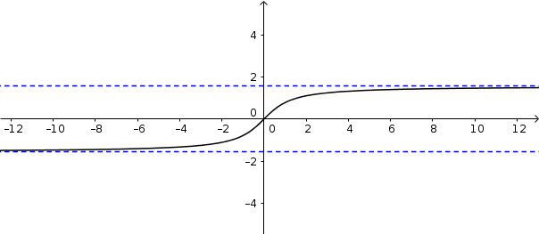
Fallið \(\arctan(x)\) hefur tvær láréttar aðfellur, \(y=\frac{\pi}{2}\) og \(y=\frac{-\pi}{2}\).
5.6.3. Skáfella
Skilgreining
Fallið \(f\) hefur skáfellu ef til eru \(a\) og \(b\) þannig að \(\lim_{x\to \infty} f(x) -ax-b = 0\) og/eða \(\lim_{x\to -\infty} f(x) -ax-b= 0\).
Skáfellan er þá línan \(y=ax+b\).
{kind=link}
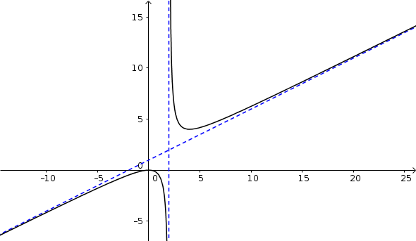
Fallið \(\frac{x^2}{2x-4}\) hefur skáfelluna \(y=\frac{1}{2}x+1\) auk lóðréttu aðfellunnar \(x=2\).
5.7. Að teikna graf falls
Þegar teikna á graf fallsins \(f\) er gagnlegt að fara í gegnum atriðin á eftirfarandi lista:
Ákvarðið \(f'\) og \(f''\) og þáttið útkomurnar ef hægt er.
- Kannið \(f\) til að ákvarða skilgreiningarmengi þess auk eftirfarandi eiginleika:
Lóðréttar aðfellur. (Leitið að rótum nefnara)
Láréttar aðfellur og skáfellur. (Finnið \(\lim_{x \to \pm\infty}f(x)\).)
Samhverfa (er \(f\) jafnstætt eða oddstætt?)
Skurðpunktar við ása (punktar með hnit \((x,0)\) eða \((0,y)\)), endapunktar skilgreiningamengisins eða aðrir punktar á grafinu þar sem einfalt er að reikna út bæði hnitin.
- Kannið \(f'\) til að ákvarða eftirfarandi:
Útgildispunkta.
Punktar þar sem \(f'\) er ekki skilgreint (sérstöðupunktar, endapunktar skilgreiningarmengis \(f\) og lóðréttar aðfellur)
Bilin þar sem \(f'\) er jákvætt og neikvætt. Það er góð hugmynd að setja þessar upplýsingar fram í töflu. Á töfluna má svo líka merkja inn niðurstöður um hvar \(f\) er vaxandi og minnkandi og hvort útgildispunktar séu staðbundin hágildi eða lággildi.
- Kannið \(f''\) til að ákvarða eftirfarandi:
Punktar þar sem \(f''(x)=0\).
Punktar þar sem \(f''\) er ekki skilgreint (sérstöðupunktar, endapunktar skilgreiningarmengis \(f\) og lóðréttar aðfellur, e.t.v. auk fleiri punkta þar sem \(f'\) er skilgreint en ekki \(f''\).)
Bilin þar sem \(f''\) er jákvætt og neikvætt og \(f\) þar af leiðandi kúpt og hvelft. Hér er gagnlegt að útbúa töflu.
Beygjuskilapunktar.
5.8. Útgildisverkefni
5.8.1. Markmiðið
Útgildisverkefni snúast um það að hámarka eða lágmarka tiltekna stærð, t.d. verð, rúmmál, lengd, … . Þá þarf að finna (helst diffranlegt) fall fyrir stærðina sem við höfum áhuga á hámarka/lágmarka en þó með þeim skorðum sem verkefnið setur okkur.
Til þess að þetta sé mögulegt má fallið bara vera háð einni breytu og það þarf helst að vera diffranlegt.
Þá getum við fundið útgildi með þeim aðferðum sem við erum búin að koma okkur upp.
5.8.2. Að leysa útgildisverkefni
Lesið verkefnið vandlega og áttið ykkur á því hvert það er og hvað á að finna.
Teiknið mynd ef mögulegt er, hún gefur oft upplýsingar um skorður sem hjálpa okkur að útbúa fallið.
Skilgreinið aukabreytur.
Skilgreinið fallið, sem fall af einni eða fleiri breytum.
Finnið skorður (jöfnur) sem hægt er að stinga inn í fallið
Skrifið fallið sem fall af einni breytu.
Finnið útgildi
Dragið ályktanir af niðurstöðunni, og athugið hvort hún sé raunhæf miðað við verkefnið (rúmmál á ekki að vera neikvætt og þess háttar).
5.8.3. Dæmi: Gosdós
Hvert er hagkvæmasta formið á sívalningslaga gosdós?
{kind=link}
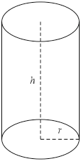
5.8.4. Dæmi: Kassi
Hvernig er stærsti (mesta rúmmálið) loklausi kassinn sem hægt er búa til úr örk sem er \(12 \times 12\)?
{kind=link}
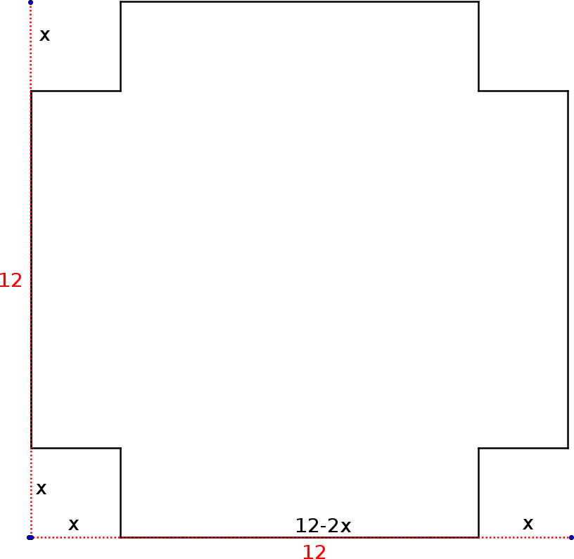